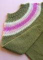

|
||
Premium Patterns Wintry Mix Mitts Love Bytes HawkeyeFree Patterns Kiddie Cadet Summerlin Ruffled Scarf Seamless DS Sock Simply Seamless Pouch Myriads of MushroomsExtras DIY Mitten Blocker Felt Patch Tutorial Yarn Dyeing Tutorial Needle Pouches Knitting Journal |
January 13, 2008 - Posted by Alice SchneblyCamdyn's Drive-ThruProject Specs I am happy to show off my first real FO of 2008! I am glad that I got out of my little knitting slump where I didn’t knit anything over the holidays. This sweater was the perfect simple project to relax with and get back into the swing of knitting. I always love knitting for Camdyn. It’s hard to believe she can have a new sweater in less than a week! I didn’t really think twice about this pattern when it first came out, but after seeing JulieFrick’s Drive-Thru that she made for her son, I knew I had to get this pattern! I made only a few modifications to the pattern. The first one wasn’t really intentional—knitting the smallest sweater size. I sat down and cast on and knit almost the whole body before I realized I’d cast on for the size 2 rather than the size 4! Luckily when I slipped it on Camdyn for a fitting it wasn’t horrendously small, just much more fitted than the other finished versions of this sweater that I’ve seen. I decided to try to knit the size 2 but to the length measurements of the size 4, and luckily it turned out okay! I actually knit the body a bit longer because Camdyn seems to be getting taller every day and I hope that will prolong the time that she can fit into this sweater. Right now it falls at tunic length which I think is still pretty cute. If I would have knit it just a bit longer it could have been a sweater dress! Instead of doing a stranded transition row between the colors on the yoke, I opted to do a simple slipped stitch pattern. It was super easy and I think it has the same effect as the original pattern. In fact, every time I looked at this pattern online I just assumed the yoke was done with slipped stitches! The only other change I made while knitting was to put the underarm stitches on holders rather than casting them off. It was so easy to graft them together when the sweater was finished. While knitting the yoke and figuring out my color pattern I found it easiest to write down all what I was going to do row by row. The pattern instructions give you a direction to go in for the color changes but it’s not totally laid out for you. I used my row gauge to determine where the decrease rounds would fall and worked in my colors around that so that the decreases would be in the middle of a color section. I think this helped keep the transition rows looking cleaner.
Overall I really liked both the pattern and the yarns I used. This was my first time using Swish Superwash. It actually feels quite a bit softer than Cascade 220 Superwash. I really liked knitting with it. I’ve read that some people don’t like Swish Superwash, and that in some cases it has even felted! I’ll have to see how it holds up in this sweater. As always I liked working with the Cascade 220 Superwash. It really transforms after washing. It’s much softer and the stitches really even out. I love that this sweater matches one of Camdyn’s Kiddie Cadet Hats (it’s the same color as the main color in the sweater!) so I’m sure they’ll be worn together quite a bit. Also pictured are the darling Little Snugs that Grace made Camdyn for Christmas! She loves them! |
   Recent ReviewsRecent Posts
 Our Favorites
|
| © 2007 KathrynIvy.com | ||

{kind=link}
{kind=link}